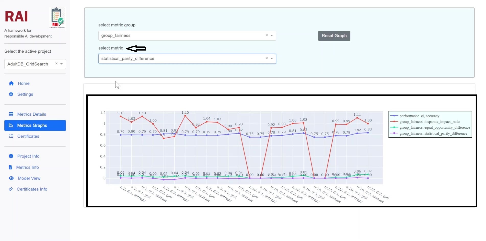

Model Selection
Model selection is the process of selecting one of the models as the final ML-model for a training dataset.
To figure this out, RAI will usually come up with some kind of evaluation metric.
Then it will divide the training dataset into 3 parts: Training set, Validation set(sometimes called development), and a Test dataset.
The Training - It is used to fit the models,
The Validation - It is used to estimate prediction error for model selection,
The Test set - It is used to do a final evaluation and assessment of the generalization error of the chosen model on the test dataset.
This way, we can determine the model with the lowest generalization error.It refers to the performance of the model on unseen data, i.e. data that the model hasn’t been trained on.
Example
We may have a dataset for which we are interested in visualizing performance of individual case. We do not know beforehand as to which model will perform best on this problem, as it is unknowable. Therefore, we fit and evaluate a suite of different models on the problem.
Rai can help us in Model selection
We can select a Project here
Select project

We can go to Metric Graphs
Metric Graphs shows here how individual parameters and metrics have changed during model development
Metric graph

Here for instance, we have performed some Grid search to select the best model for task
We can show individual metrics of interest
Metric performance

Monitor how system is performing in each individual case
This helps us to select best model that fits our desire characteristics
Individual case
{kind=link}
Model_selection
Important
Through RAI we can detect it before it becomes a problem or respond to it when it arises by putting the right systems in place early and staying on top of data collection, labeling, and implementation.